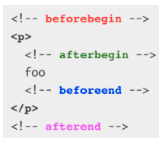

Introducció
en Aquest exemple d'introducció:
console.log(navigator);
console.log(Geolocation);
console.log(history);
console.log(location);
console.log(localStorage);
console.log(document);
let text = "Good ";
const parlar = (text) => {
speechSynthesis.speak(new SpeechSynthesisUtterance(text));
};
parlar(text);
document
console.log(document);
console.log(document.head);
console.log(document.body);
console.log(document.documentElement);
console.log(document.characterSet);
console.log(document.title);
console.log(document.links);
console.log(document.styleSheets);
console.log(document.scripts);
//obtener el que seleccione el usuari de la pagina i sexecuta amb el tiemout després de 3 sec i lo converteix a un String
setTimeout(() => {
console.log(document.getSelection().toString());
}, 3000);
Elements d'Aquest exemple de document:
| Element | Descripció |
|---|---|
| Document | Representa qualsevol pàgina web carregada al navegador i serveix com a punt d'entrada al contingut de la pàgina web |
| document.head | Devuelve l'element <head> del document actual.. |
| document.body | Devuelve l'element <body> del document actual.. |
| document.documentElement | Devuelve l'element <html> als documents HTML |
| document.characterSet | Retorna la codificació de caràcters (conjunt de caràcters) usat al document ex UTF-8 |
| document.title | Devuelve l'element <title> del document actual.. |
| document.links | Devuelve l'element <a> del document actual, que té l'atribut href. |
| document.styleSheets | Devuelve l'element <style> o link de tipus css del document actual |
| document.scripts | Devuelve l'element <script> del document actual |
DOM.Node
Un node és una interfície del DOM. Al ser abstracta és una classe base que ens servirà per molts altres objectes Dom de l'API Permetrá que tots els Objectes del Dom, basats en la interfície node, s'utilitzin de format similar fins i tot intercanviable
Algunes Classes que implementen la interfície node són :Document,Element i DocumentFragement.
Tipus de nodes:
- Node.ELEMENT_NODE
- Node.ATTRIBUT_NODE
- Node.TEXT_NODE
- Node.CDATA_SETCTION_NODE
- Node.SECTION_NODE
- Node.PROCESSIN_INSTUCTION_NODE
- Node.COMMENT_NODE
- Node.DOCUMENT_NODE
- Node.DOCUMENT_TYPE_NODE
- Node.DOCUMENT_FRAGMENT_NODE
Mètodes del DOM per Capturar ELEMENTs
NOTA: Aquestes Métodes queden substituides per el querySelector per qué
és Flexible
getelementByTagName()getelementByClassName()getelementByName()- getElementById()
//Metodes per Capturar elements
//obtener element amb el nom de la etiqueta
console.log(document.getElementsByTagName("li"));
//obtener el element amb el nom de la class
console.log(document.getElementsByClassName("card"));
// obtener el element amb el atribut de la etiqueta en aquest Cas el nom
console.log(document.getElementsByName("nom"));
//Obtener elements amb el id de la tiqueta Html
console.log(document.getElementById("menu"));
Com Seleccionar elements. Utilitzarem només les següents funcions:
- querySelector()
- queryselectorAll()
- getElementById()
NOTA: una etiqueta HTMl en javascript és un element, no un node.
IMPORTANT: LES MÉTODES PER CAPTURAR ELEMENTS QUEDEN SUBSTITUIDES PER ELS
DE querySelector per qué és Flexible se podria Capturar qualsevol
element o atribut id ....
// queden substituides per
console.log("utilitzant query Selector");
console.log(document.querySelector("#menu"));
console.log(document.querySelector("a"));
console.log(document.querySelectorAll("a"));
console.log(document.querySelector(".card"));
console.log(document.querySelectorAll(".card"));
Attributs i data-atributs
I-Attributs
els data atributs son atributs propis que nosaltres podem afegir . ales etiquetes HTML.Només cal afegir un atribut que comenci per "data-" continuació concatenarem
1-formes d'accedir als atributs
hi ha dues formes d'accedir als atributs amb el "." Ex document.documentElement.attribut i amb el .getAttribute()
console.log("******** atributs i data-atributs *****");
console.log(document.documentElement.lang);
console.log(document.documentElement.getAttribute("lang"));
- és amb la notació "." Retorna el valor en temps d'execusio
- i amb la notació getAttribute només retorna el contingut que té el attribute en temps d'edició
la differencia que hi ha entre la notació "." i el getAttribute
Exemple
/*en Aquest Exemple amb el . retorna tot el contingut en temps d'execusio*/
console.log(document.querySelector(".link-dom").getAttribute("href"));
console.log(document.querySelector(".link-dom").href);
2-Exemples de de modificar o afegir valors als Atributs
IMPORTANT: per qualsevol variable que utilitza el DOM s'hauria d'utilitzar el $ abans del nom del variable
/*. i setAttribute*/
document.documentElement.lang = "es";
document.documentElement.setAttribute("lang", "en");
//exemple de un variable que utilitza el DOM
const $linkDom = document.querySelector(".link-dom");
$linkDom.setAttribute("target", "_blank");
$linkDom.setAttribute("rel", "noopener");
$linkDom.setAttribute("href", "https://www.google.com");
/*Per Compraobar si Existeix l'atribut */
console.log($linkDom.hasAttribute("rel"));
/*Per esborrar l'attribut */
$linkDom.removeAttribute("rel");
console.log($linkDom.hasAttribute("rel"));
| Métode | Descripció |
|---|---|
| .hasAttribut("att") | per Comprobar si existeix algun Attribut si existeix retorna true si no false. |
| .removeAttribute("att") | esborrar Attribut |
II- Data Attributs
els data atributs son atributs propis que nosaltres podem afegir . a les etiquetes HTML.Només cal afegir un atribut que comenci per "data-" continuació concatenarem.tots els data-atributs s¡emmagtzeme en un mapa anomenat "Data Set"
3- com gestionem els data-atributes
PER gestionar els attributs hi ha dues maneres
- amb la propietat data-set
- Al utilitzar aquesta Propietat no s'hauria d'utilitzar el "data-"
- Amb la propietat getAttribute s'hauria de utilitzar "data-"
console.log($linkDom.getAttribute("data-description"));
/*tots els data-atributs s'emmagtzeme en un mapa anomenat "Data Set" */
console.log($linkDom.dataset);
console.log($linkDom.dataset.description);
$linkDom.setAttribute("data-description", "model de objecte del document");
console.log($linkDom.dataset.description);
/*per canviar el valor de un data-atribute */
$linkDom.dataset.description = "Nova description";
console.log($linkDom.dataset.description);
console.log($linkDom.hasAttribute("data-description"));
Gestionar estils CSS en JS
I-Accés als atributs i les variables css en JS
Compte amb la sintaxi camel case en CSS! En CSS, les propietats estan separades per guions, per exemple, background-color, però en JavaScript s'escriuen en camel case, com ara backgroundColor.
Quan accedim a les propietats CSS amb CSSStyleDeclaration o utilitzem la notació de punt, fem servir camel case.
En canvi, quan utilitzem getComputedStyle, no utilitzem guions per accedir a les propietats, però amb getPropertyValue sí que utilitzem guions per accedir a les propietats.
console.log(window.getComputedStyle($linkDom).backgroundColor);
console.log(
window.getComputedStyle($linkDom).getPropertyValue("background-color")
);
/*retorna els estils aplicats per el link dom */
console.log(window.getComputedStyle($linkDom));
console.log("*****variables de css");
const $html = document.documentElement,
$body = document.body;
let varPrimariColor =
getComputedStyle($html).getPropertyValue("--color-primari"),
varSecundariColor =
getComputedStyle($html).getPropertyValue("--color-secundari");
console.log(varPrimariColor, varSecundariColor);
$body.style.backgroundColor = varSecundariColor;
$html.style.setProperty("--color-primari", "pink");
varPrimariColor = getComputedStyle($html).getPropertyValue("--color-primari");
$body.style.setProperty("--color-primari", varPrimariColor);
Toggle
Un interruptor (toggle) és una funció que afegeix o elimina una classe d'un element. Si l'element ja té la classe, la treu; si no la té, l'afegeix. Això permet canviar l'estat d'un element de manera dinàmica.
A continuació es mostra un exemple de com utilitzar la funció toggle per afegir o eliminar una classe d'un element:
console.log("****toggle*****");
console.log($card.classList.contains("rotate-45"));
$card.classList.toggle("rotate-45");
console.log($card.classList.contains("rotate-45"));
//$card.classList.toggle("rotate-45");
//replace
$card.classList.replace("rotate-45", "rotate-135");
//add
$card.classList.add("opacity-80", "sepia");
$card.classList.remove("opacity-80", "sepia");
//permet no més un paramtre de valor tring
$card.classList.toggle("opacity-80");
$card.classList.toggle("sepia");
Géstió textual i html de un élement
I. innerText
Característiques:
- Respecta les indentacions i tabulacions del contingut.
- No interpreta ni renderitza etiquetes HTML.
- No és una propietat estàndard; va ser creada inicialment per a Internet Explorer.
II. textContent
Característiques:
- No respecta indentacions ni tabulacions del contingut.
- No interpreta ni renderitza etiquetes HTML.
- És una propietat estàndard i àmpliament compatible.
III. innerHTML
Característiques:
- Interpreta i renderitza les etiquetes HTML presents en el contingut.
- S'utilitza per inserir o reemplaçar contingut HTML dins de l'element seleccionat.
IV. outerHTML
Característiques:
- Interpreta i renderitza les etiquetes HTML, igual que
innerHTML. - Substitueix l'element complet (incloent el propi element) pel contingut proporcionat.
const $caption2 = document.querySelector(".caption2");
/*inner Text i innerContent Respecte indentacions , peró no interpreta els tags HTML */
//no és estandard
$caption2.innerText = `és la caption 2`;
//propietat estandard
$caption2.textContent = `és <b> la </b> caption 22`;
//si volem que s'interprete els tags HTML hem d'utilitzar innerHTML
$caption2.innerHTML = `és la <b>caption</b> 2`;
//estamos aqui
//per el inner text s'hauria de posar-les entre templates
//10 de desiembre
const $textDOM = document.querySelector("#outerHTML");
let text = `<p>
El model d'Objectes del Document (<b><i>DOM - Document Object Model</i></b>)és un API per a documents HTML i XML.
</p>
<p>
Facilita una representació estructural del document, permetent modificar el seu contingut i presentació visual mitjançant codi JS
</p>
<p>
<mark> El DOM no és part de l'especificació de JavaScript, és una API per als navegadors</mark>
</p>`;
/*inner Text Respecte indentacions i tabulacions, peró no interpreta els tags HTML */
/*inner text no és estaàndard . ës va crear per al navegador IE */
$textDOM.innerText = text;
/*la propietat estàndard textContent No respecte indentacion ni tabulacions i no interpreta els tags HTML */
$textDOM.innerContent = text;
/*innerHTML s'intrpreten els tags HTML */
$textDOM.innerHTML = text;
/*outerHTML s'intrpreten els tags HTML treu el tag seleccionat i posat el que donem */
$textDOM.outerHTML = text;
DOM traverssing
El recorregut del DOM (DOM Traversing) és el procés de navegar a través dels elements i nodes del DOM. Això permet accedir i manipular elements específics dins de l'estructura del document.
const $cards = document.querySelector(".cards");
console.log($cards);
console.log($cards.children);
console.log($cards.children[0]);
//estem acceden als elemens
console.log($cards.parentElement);
console.log($cards.firstElementChild);
//accedem als Nodes
//el primer fil node és un return
console.log($cards.childNodes);
console.log($cards.lastChild);
console.log($cards.previousElementSibling);
console.log($cards.previousSibling);
DOM Creant elements i fragments
I-Crear elements dínamicament
Podem crear elements amb el métode de .CreateElement("element") , En el següent exemple podem veure com és creant elements de forma dínamica
NOTA: AL CREAR ELEMENTS NO ÉS POSEN DIRECTAMENT AL DOCUMENT
//afegir i crear dínamicament elements al DOM
//Crear un element (card)
const $figure = document.createElement("figure"),
$img = document.createElement("img"),
$figcaption = document.createElement("figcaption"),
$figcaptionText = document.createTextNode("Imatge 6");
//ara que ja tenim la nova figure afegirem interactivament etiquetes al DOM
//segona opcion
$img.setAttribute("alt", "random6");
$img.setAttribute("src", "https://picsum.photos/200/200/?random=6");
$figcaption.appendChild($figcaptionText);
//crear elements
//$cards.appendChild($figure).appendChild($img);
$figure.appendChild($figcaption);
//Afegir class a figure
$figure.classList.add("card");
const $figure2 = document.createElement("figure");
$figure2.innerHTML = ` 
imatge7 `;
$figure2.classList.add("card");
//$cards.appendChild($figure2);
II-Crear fragments
Què passa si volem molts nodes de cop? Cada cop que fem un appendChild té un cost considerable al document HTML. Això pot fer que si inserim centenars de tags HTML, la pàgina quedi bloquejada o congelada. Estratègia: utilitzarem fragments!
Volem crear molts nodes de cop. Primera opció no optimitzada:
per veure els resultats éstacions
const estacion = ["Primavera", "estiu", "Hivern", "tardor"];
const $ul = document.createElement("ul");
document.write(" Estacions de l'any
");
document.body.appendChild($ul);
estacion.forEach((el) => {
const $li = document.createElement("li");
$li.textContent = el;
$ul.appendChild($li);
});Segona opció no optimizada resultat Continents
const continents = ["Àfrica", "Europa", "Amèrica", "Ocenaia", "assia"];
const $ul2 = document.createElement("ul");
$ul2.setAttribute("id", "continents");
document.write(" Continents del mon
");
document.body.appendChild($ul2);
$ul2.innerHTML = "";
continents.forEach((el) => ($ul2.innerHTML += `${el} `));TERCERA opció Optimizada! Es tracta de crear fragments del dom i treballar amb aquestes fragments i al final afegirem el fragment al DOM résultat Mesos
const mesos = [
"gener",
"febrer",
"març",
"abril",
"maig",
"juny",
"juliol",
"agost",
"setembre",
"octubre",
"novembre",
"desembre",
];
const $ul3 = document.createElement("ul"),
$fragment = document.createDocumentFragment();
/*no podem utilitzar innerHTMl en fragments! (els fragments són nodes)*/
mesos.forEach((element) => {
const $li = document.createElement("li");
$li.textContent = element;
$fragment.appendChild($li);
});
document.write("MESOS DE L'ANY
");
$ul3.appendChild($fragment);
document.body.appendChild($ul3); /*append child del DOM */
Templates en HTml
El template serveix com a emmagatzematge per a plantilles de markup de HTML. El navegador ignora el seu contingut, només verifica la validesa de la sintaxi, però podem accedir-hi i utilitzar-lo en JavaScript per crear altres elements. en el exemple següent crearem diferents cards amb template :
const cardContent = [
{
title: "imatge 8",
img: "https://picsum.photos/200/200/?random=8",
},
{
title: "imatge 9",
img: "https://picsum.photos/200/200/?random=9",
},
{
title: "imatge 10",
img: "https://picsum.photos/200/200/?random=10",
},
{
title: "imatge 11",
img: "https://picsum.photos/200/200/?random=11",
},
{
title: "imatge 12",
img: "https://picsum.photos/200/200/?random=12",
},
];
const $fragmentTemplate = document.querySelector("#template-card").content,
$fragment2 = document.createDocumentFragment();
/*const $cards = document.querySelector(".cards");*/
console.log($fragmentTemplate);
/*récorrer el fragment template per afegir dinàmicament els continguts*/
cardContent.forEach((element) => {
$fragmentTemplate.querySelector("img").setAttribute("src", element.img);
$fragmentTemplate.querySelector("img").setAttribute("alt", element.title);
$fragmentTemplate.querySelector("figcaption").textContent = element.title;
/*a l'etiqueta html només hi ha un si utilitzem ja no estara disponible per les següents llavors . La soluciona és clonar el node amb importNode(estructura,boolean)
si el valor booleà és :
true: clona tota l'estrucardContentctura amb el seu contingut
false: només clonaria l'estructura (template>)
pero no el contingut */
let $clone = document.importNode($fragmentTemplate, true);
$fragment2.appendChild($clone);
});
/*per aplicar els canvis*/
/*
$cards.appendChild($fragment2);*/
I- Modificant elements
Éstil Classic
per modificar elemets (per esborrar o canviar el contingut d'un element) utilitzarem diferents mètodes com:
- element.removeChild(posicio del element):per esborrarun fill del element seleccionat
- element.replaceChild: per fer canvi de un fill
- element.insertBefore(element,abans d'aquest element): per insertar abans del del elemnt del segon paramétre
- element.importNode: per clonar un element /*EL FALSE NOMÉS COPIA LA ESTRUCTURA*/ /*EL TRUE COPIA TOT EL CONTINGUT DEL ELEMENT SELECIONAT*/
- element.appendChild
/*modifcant elements de tipus card
utilitzarem la réferencia $cards*/
const $newcard = document.createElement("figure");
$newcard.innerHTML = `<img
src="https://picsum.photos/200/200/?random=13"
alt="imatge de la "/>
<figcaption>imatge6</figcaption>`;
$newcard.classList.add("card"); /*Afegir la clase card*/
/*$cards.appendChild($newcard);*/ /*Afegir la card 6 al final de les cards */
/* Substituim la tercera card per la new card*/
//$cards.replaceChild($newcard, $cards.children[2]);
/*inserir la new card abans de la primera card */
$cards.insertBefore($newcard, $cards.firstElementChild);
//eliminar una card, per exemple la darrera card
$cards.removeChild($cards.lastElementChild);
//clonar un element i afegir-lo al final de les crds
//const $clonecard = document.importNode($cards.lastElementChild,true);
//$cards.appendChild($clonecard);
/*EL FALSE NOMÉS COPIA LA ESTRUCTURA*/
/*EL TRUE COPIA TOT EL CONTINGUT DEL ELEMENT SELECIONAT*/
const $clonecard = $cards.cloneNode(false);
document.body.appendChild($clonecard);
II- Nou éstil
per modificar elements amb el nou estil hi ha diferents métodes:
insertAdjacentElement(posicio,element) (appendchild o insertBefore)
insertAdjacentHtml(posicio,html) (inner Html)
insertAdjacentText(posicio,text) (textContent)
On posició pot ser:
- beforeBegin(germà anterior)
- afterBegin(primer fill)
- beforeend(darrer dill)
- afterend(germà següent)

const $newcard7 = document.createElement("figure");
$newcard7.innerHTML = `
imatge7 `;
$newcard7.classList.add("card");
/*innerAdjcentHTML */
/*$cards és l'element de réferencia*/
$cards.insertAdjacentHTML("beforebegin", $newcard7.outerHTML);
$cards.insertAdjacentHTML("afterend", $newcard7.outerHTML);
/*primer fill*/
$cards.insertAdjacentHTML("afterbegin", $newcard7.outerHTML);
/*últim fill*/
$cards.insertAdjacentHTML("beforeend", $newcard7.outerHTML);
/*insertAdjacentText(posicio,text) */
let contentCard = `
Gestor d'events
I- Qué és un event en js
Els events són coses que succeeixen al sistema que estàs programant. El sistema s'encarrega de produir un senyal de cert tipus quan un event passa, i proporciona un mecanisme perquè una acció es dugui a terme (executar codi) de manera automàtica quan l'event passi
II- Tipus d'events
1-click
Es produeix quan es fa clic en un element amb el ratolí.
Exemple: En aquest cas hem utilitzat el ".onclick", però si hi ha més d'una acció que fa l'element, s'hauria de fer amb .addEventListener(event, acció).
function holaMon(nom = "desconegut") {
alert(`Hola, ${nom} `);
console.log(event);
}
const $eventsemantic = document.querySelector("#event-semantic");
//delegració d'events amb el "."i el nom de l'event i aquest event tindrà una funció que s'executarà quant es faci clic.
$eventsemantic.onclick = holaMon; //COMPTE!! va sense paraèntesis
//alternatives
//1 amb una una funcio anònima
$eventsemantic.onclick = function () {
alert("Event cridat amb una funció anònima");
};
/*2 amb Arrow Function */
$eventsemantic.onclick = () => alert("Event cridar amb una funció fletxa");
$eventMultiple.addEventListener(
"click",
holaMon
); /*els funcions en event listener sense parentesis */
$eventMultiple.addEventListener("click", () =>
alert("segon handler sobre el click")
);
1-double click (dblclick)
Aquest evenet s'activara quant fa el usuari double click sobre el element
$eventMultiple.addEventListener("dblclick", () => alert("doble click ...."));
const $event_dbl = document.getElementById("event_dbl");
$event_dbl.addEventListener("dblclick", () => alert("event-dbl"));III-remove events
Per esborrar un event s'hauria de fer servir removeEventListener. Això només funciona si s'utilitza addEventListener per afegir l'event. La funció ha de ser declarada o expressada, no pot ser anònima.
A continuació es mostra un exemple de com afegir i eliminar un event:
const removeEventclick = (e) => {
alert(`eleminant l'event ${e.type}`);
$btneventremove.removeEventListener("click", removeEventclick);
//$btneventremove.disabled = true;
};
const $btneventremove = document.getElementById("remove_event");
$btneventremove.addEventListener("click", removeEventclick);
$btneventremove.addEventListener("dblclick", () => alert("double click"));
1-altres events
| Event | Descripció |
|---|---|
| mouseover | Activat quan el cursor passa per sobre d'un element. |
| mouseout | Activat quan el cursor surt d'un element. |
| keydown | Activat quan una tecla és premuda. |
| keyup | Activat quan una tecla és alliberada. |
| change | Activat quan el valor d'un element d'entrada canvia. |
| submit | Activat quan s'envia un formulari. |
| focus | Activat quan un element rep el focus. |
| blur | Activat quan un element perd el focus. |
| resize | Activat quan es redimensiona la finestra del navegador. |
Flux events - Bombolla i captura
const $divevents = document.querySelectorAll(".flux-events div");
console.log($divevents);
function fluxevents(e) {
console.log(`hola, soc ${this.className}, orígin ${e.target.className}`);
//desactivar els altres clicks només el element que he fet click és el que mostre
//e.stopPropagation();
}
//assignarem dínamicament listeneres...
//el true el true els fa de fora per dins i el false del exterior al interior
//el once lo que fa es fa el click només un vegada i desactiva el event de click
//capture el ordre de execusió
/*
$divevents.forEach((div) =>
div.addEventListener("click", fluxevents, {
once: true,
})
);*/
$divevents.forEach((div) => div.addEventListener("click", fluxevents));
const $linkevent = document.querySelector(".flux-events a");
console.log($linkevent);
$linkevent.addEventListener("click", (e) => {
//alert("has fet click a google");
e.preventDefault(); //Cancela l'acció per defete...
// e.stopPropagation();
});
/*delegació d'events al DOM*/
/*la ides és delegar events a un element pare o superior . a partir d'aqui cal detectar el node o l'element que ha activat l'event i llavors descencadenar la progromació. exemple: En un formulari podríem assignar l'event a nivell de formulari en comptes de fer-ho per cada input Inclús podríem delegar l'event al document.
amb un sol listener al document,detectem l'element que ha descencadenat l'event i actuarem en conseqüència. A més no hi ha propogació perqué l'event és al l'element superior. */
/*ASSIGNACIó DINÀMICA
la delegació d'events és l'única forma d'assignar events a l'element HTML no estan renderitzats al document .*/
document.addEventListener("click", (e) => {
//alert(`event click capturat al document a ${e.target.className}`);
if (e.target.matches(".flux-events a")) {
alert("hem fet click al enllaç de google");
e.preventDefault();
} else if (e.target.matches(".flux-events div")) {
alert(`hem fet click o origin: ${e.target.className}`);
} else {
alert(`un altre element ${e.target}`);
}
});